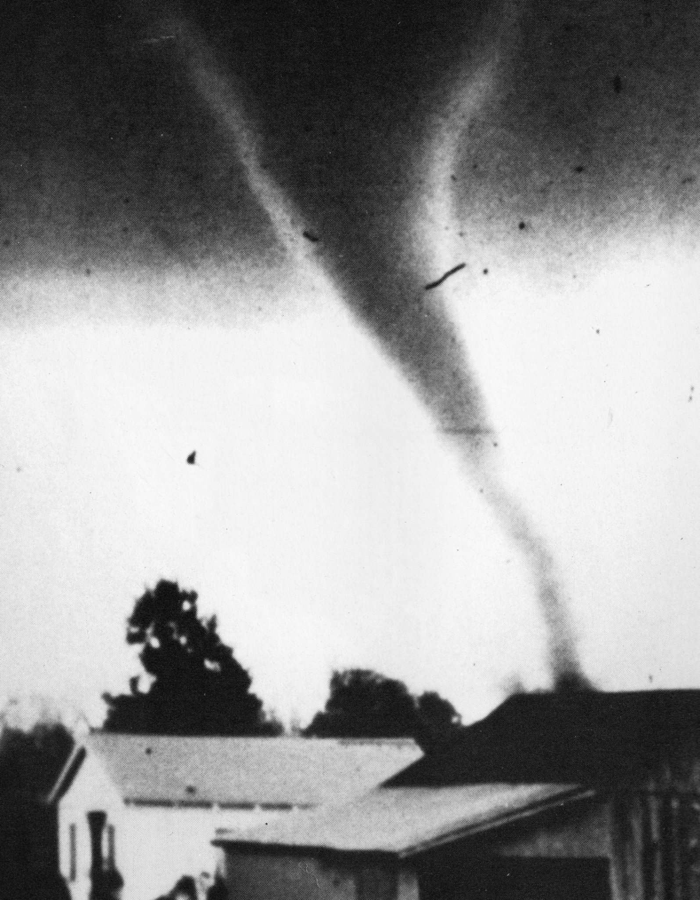

A narrative topic page compiled from council records, the Arkansas Leader, and the other sources listed at the bottom of the page. Resident discussion from Facebook groups is paraphrased into themes; no posts are quoted.
The Tornado of March 29, 1976
The story
On the afternoon of Monday, March 29, 1976, a tornado formed over Little Rock Air Force Base, traveled northeast, and struck downtown Cabot at about 3:18 p.m. In a town of a few thousand people, it killed five, injured scores, and destroyed most of the historic business district in about fifteen blocks. Cabot's modern shape — City Plaza, the rerouted highway, the siren system the city still pays to upgrade, and CabotFest itself — all trace back to that afternoon.

Cabot did not believe it could happen there. Old-timers, as the hometown paper later recalled, scoffed at tornado rumors: no one could remember a tornado touching down near town, and people believed Cabot sat too close to the foothills to be hit. The downtown that stood that Monday was an old railroad town's core — turn-of-the-century storefronts along Main Street and Second Street, many of them outdated and rickety even by 1976. A handful of newer buildings — the Arkansas Savings and Loan, the Bank of Cabot, the post office — were the exceptions.
The storm announced itself to the southwest. Weather warnings had already brought the air base's C-130s down by about 3 p.m. At about 3:15 p.m., a funnel formed in a wooded area of the base, roughly seven miles from Cabot, and Sgt. James E. Cunningham photographed it from the control tower: a broad, gray storm with debris swirling, under a sky with a greenish tint. A state trooper sitting in his patrol car at the Highway 5 overpass watched a small white whirlwind develop into a dark funnel and hit the ground about five miles southwest of town. The official storm database times the tornado's track from 3:07 p.m. Central time, beginning southwest of the base and ending northeast of Cabot.
In town, the warning system worked the way it was supposed to. Mayor Willie Ray was at City Hall when the first tornado warning came in, and he ordered the sirens sounded; he left for home before the storm destroyed most of the building around the office he had just left. At the Bank of Cabot, employees heard the siren and crowded into the vault — bank president J.M. Park, who felt the sudden change in air pressure as the windows shattered, afterward called the vault the safest place in town; the bank lost part of its roof and reopened the next day.
The tornado, estimated at the time to be some 400 yards wide at its worst, bounced several times before settling onto South Second Street and driving into the business district. Some residents believed Highway 367 and the railroad tracks altered its course and made it jump the high school campus; students who had already boarded buses to go home were taken back off and sheltered in classrooms. None of the five deaths occurred at the school. From downtown, the storm continued northeast on what the hometown accounts describe as a nine-mile path, damaging churches, homes, and sheds in the Old Austin community before it ended.
The destruction in the fifteen blocks of downtown was close to total. The Star-Herald's lists, republished fifty years later, name the demolished: City Hall and the fire station, the Arkansas Power and Light office, the Miller Ford dealership, the Masonic Hall, Faith Baptist Church, a dress-manufacturing plant, two service stations, a pool hall, furniture and appliance stores, groceries, beauty shops, barber shops, and more. Damaged but left standing were the bank, the savings and loan, the post office, and a long roll of Main Street businesses. Beyond downtown, some 200 homes were severely damaged or destroyed, and the Oak Meadow, Ray's, and Windwood trailer courts took heavy damage. City Hall was demolished except for the mayor's office and the courtroom — the two rooms Ray had so recently left — and city government relocated to the high school gym. School was cancelled for the rest of the week. The First Baptist Church, a few blocks from the worst of it, survived; Faith Baptist did not.
The five people killed, as their names were published in the fiftieth-anniversary retrospective drawn from the Star-Herald's 1976 coverage, were Jo Lee Logston, 27, of the Sylvania community; Linda Eisenhower, 38, and Sandra Eisenhower, 10, both of Cabot; Robert Maul, 45, of Jacksonville; and Vanessa Sory, 2, of Cabot, who died at the Ray Trailer Court. Contemporary reporting in the Jonesboro Sun said four of the victims were found in the Windwood Realty Co. building downtown. The Star-Herald counted more than 200 people injured, with 75 admitted to local hospitals; the official storm database, using its standardized counting, records 64 injuries.
Help arrived the way it did in 1976: from the air base, first. Air Force personnel, the National Guard, the Salvation Army, the Red Cross, area law-enforcement officers and firefighters, CB radio club members, and volunteers streamed into town to search the rubble. Within about two hours, the base had backhoes and trucks downtown helping dig people out. The Salvation Army set up across from a ruined service station and made sandwiches that first night from the food in its cooler — milk and bread that would have spoiled anyway with the power out. Firefighters had to drag their trucks out of the damaged fire station with tractors; luckily, no fires followed the storm. President Gerald Ford designated Cabot a disaster area.
The days after were a study in secondary hazards. Water service faltered when the system lost pressure; electricity and phone service were out for several days. Officials banned burning debris, because bulldozers clearing rubble kept snapping off gas meters and no one wanted an explosion. The state health department quarantined all food in downtown stores and restaurants for two days after an inspector found glass fragments inside fruit and inside a jar of peanut butter, sucked in by the storm's pressure drop; the food was judged contaminated and destroyed. Entry into the damage area was by pass — one surviving pass, issued March 31, 1976, is held by the school district's Museum of American History. On April 3, a cleanup worker was injured when a wall fell on him in a damaged First Street building.
Mayor Ray, who had held the office sixteen years, gave the recovery its tone. Interviewed two weeks later, he said the town was grateful to be alive in the numbers it was — the storm could as easily have killed 500 as five — and predicted that within two years Cabot would be unrecognizable, though the day itself would not be forgotten. The Star-Herald's editor, Cone Magie, printed a slogan in large letters on an aluminum press sheet and posted it in the rubble downtown: "Cabot: Coming Back Strong!"
The rebuilding made one decision that still defines downtown's map. Rather than re-plat the destroyed blocks lot by lot, the city built its new civic core — a city hall, a municipal courtroom, a library (since relocated), and a police station — on the debris-filled dividing point between the east and west sections of Main Street, creating City Plaza. Arkansas Highway 89, which had run down West Main Street, was redirected around the plaza along one block of Second Street and out Pine Street, south of the high school campus. The new City Hall and Community Center rose on Main Street by the late 1970s. The commercial rebuilding followed the era's national pattern: as the city's own downtown essay puts it, a once-thriving First Street was rebuilt in the image of a suburban strip mall — functional, but a different downtown from the one the tornado took.
In the fall of 1978, with recovery nearly complete, the city held the first CabotFest to celebrate it. Committees directed by local banker James M. Park — the initials match the J.M. Park who rode out the storm in the Bank of Cabot vault, though the sources do not state the identity outright — chose the theme "Cabot, We're Back." The festival wrapped around high school homecoming: a Friday parade, a spaghetti supper, the homecoming game against Bryant, and then, on Sunday, the solemn part — residents gathered in front of the newly built Community Services Center to remember the tornado's losses and dedicate the building, with Governor David Pryor as keynote speaker. The building is now the Willie Ray Cabot Community Service Center, named for the mayor who ordered the sirens. The homecoming tie later proved unworkable for scheduling vendors, and the festival settled into its modern slot, the second Friday and Saturday of October. It runs two days now, without a parade, and draws more than 20,000 visitors a year.
The tornado's longest shadow may be the sirens. Cabot had sirens in 1976 and has never been without them since. When voters approved the 2021 bond package on August 10 of that year, one of its smallest items was $275,000 for early-warning facilities; the tornado-siren question passed 743–230. In January 2022, the city council approved buying twelve new sirens from Table Rock Alerting Systems on a low bid of $299,995. The argument has since moved outward: in August 2026, the Lonoke County Quorum Court voted 8–4 against spending $500,000 to put ten sirens in the county's rural areas, with full countywide coverage estimated at $3.5 million for sixty to seventy sirens. The proposal's sponsor argued that phone-based warnings fail — phones off, settings wrong, personal data surrendered to apps — and that something is better than nothing; opponents called outdoor sirens an outdated method, and a former Cabot mayor sitting on the court observed that Cabot has always had tornado sirens, since the deadly tornado destroyed downtown in 1976 — it is just hard to change.
Shelters are the other half of the argument. Cabot now has two FEMA tornado safe rooms at school Pre-K campuses that unlock automatically when the sirens sound, and the Veterans Park Events Center's tornado shelter doubles as a warming center in winter. But on April 2, 2025, a resident sitting in the community center while hail and lightning hammered the building posted to Cabot's Petty Citizens that the storm shelter there was not being opened — a shelter that only opens once the storm is already overhead, the post argued, is no shelter at all. The thread drew some ninety comments, the largest storm-policy discussion the groups produced in these searches.
The anniversaries have a rhythm of their own. On March 29, 2021 — the forty-fifth anniversary, and the day of a town hall for the bond issue that would fund the new sirens — Mayor Ken Kincade gave his state of the city address and drew the parallel directly: the tornado that destroyed downtown forty-five years earlier, and a pandemic that shut the city down in March 2020; the same response both times, he said — the city stayed together and took care of one another. On the fiftieth anniversary in 2026, the Leader published a full retrospective built from the Star-Herald's April 1976 reporting, and by June the Cabot Public Schools Museum of American History at 811 S. Pine Street had opened a dedicated exhibit, "The 1976 Cabot Tornado": more than thirty photographs of the devastation, newspaper headlines, town passes, quarantine tags, transcripts of eyewitness recordings, and a quilt sewn to celebrate the rebuilding of downtown.
Timeline
- - March 29, 1976, ~3:07 p.m. — The official storm database times the tornado's track from 3:07 p.m. Central time, from southwest of Little Rock Air Force Base to northeast of Cabot; it is rated F3, with five deaths and 64 injuries in the database's count.
- - March 29, 1976, ~3:15–3:18 p.m. — The funnel forms over the air base and is photographed from the control tower (hometown account); sirens sound in Cabot on Mayor Willie Ray's order; downtown is struck at about 3:18 p.m.
- - March 29, 1976, evening — Air base and National Guard personnel, the Salvation Army, the Red Cross, and volunteers search the rubble; utilities are out; the Salvation Army feeds people from a ruined station's cooler stock.
- - March 31, 1976 — Damage-area passes are being issued (a surviving pass bears this date); a two-day state health quarantine is in effect on downtown food.
- - April 3, 1976 — A cleanup worker is injured by a falling wall in a damaged First Street building.
- - April 13, 1976 — Mayor Ray, interviewed by the Paragould Daily Press, predicts a transformed town within two years and says the day will not be forgotten.
- - 1976 — President Gerald Ford designates Cabot a disaster area; damage is estimated at $10.1 million in the hometown account.
- - Fall 1978 (last weekend of September) — The first CabotFest, themed "Cabot, We're Back," is held around homecoming; on its Sunday, the new Community Services Center is dedicated with Governor David Pryor speaking.
- - Late 1970s — The new City Hall, courtroom, library, and police station are completed on the cleared Main Street divide as City Plaza; Highway 89 is rerouted around it.
- - March 29, 2021 — The forty-fifth anniversary: Mayor Kincade's state of the city address compares the tornado recovery to the pandemic; a bond town hall is held that evening.
- - August 10, 2021 — Voters approve the bond package, including $275,000 for early-warning (tornado siren) facilities; the siren item passes 743–230.
- - January 2022 — The council approves twelve new tornado sirens from Table Rock Alerting Systems for $299,995.
- - April 2, 2025 — A Cabot's Petty Citizens thread (about 90 comments) protests a community-center storm shelter not being opened during a hail and lightning storm.
- - March 29, 2026 — The fiftieth anniversary. That evening, a resident asks the group's old-timers whether anyone remembers fifty years ago that day; twenty-one comments answer.
- - April 1, 2026 — The Leader publishes its fiftieth-anniversary retrospective, drawn from the Star-Herald's April 1976 coverage.
- - June 2026 — The Museum of American History's "The 1976 Cabot Tornado" exhibit is on display: photographs, headlines, passes, quarantine tags, eyewitness transcripts.
- - August 2026 — The Lonoke County Quorum Court votes 8–4 against a $500,000 county siren expansion; 1976 is invoked in the debate.
- - Every October — CabotFest, second Friday and Saturday, downtown — two days and more than 20,000 visitors, fifty years on from the storm it was created to answer.
What residents remember
In the Facebook groups, fifty-year memory has exactly one strong artifact, and it is a good one. On the evening of March 29, 2026 — the fiftieth anniversary itself — a member of Cabot's Petty Citizens asked whether any old-timers were around who remembered fifty years ago that day. Twenty-one comments came back (fifteen reactions), and read together they are a cross-section of how the storm is stored: not as civic history, but as childhood.
School memories dominate, which fits a storm that hit at dismissal time. Commenters placed themselves in fifth grade, crouched in a hallway with a book held over their heads; in sixth grade, in the building that is now Champs Hall; in an eleventh-grade classroom, watching the funnel through the window; and, with relief still audible fifty years later, at the high school the storm jumped. Others watched from outside town — from Jacksonville, where it was visible; from a back porch on Graham Road as it headed toward Cabot; as small children watching it flatten the town. One commenter was at work at a local plant, on a loading dock with a hundred coworkers, and remembered the funnel lifting over their building and setting back down on the far side. Loss appears in the family register rather than the official one: a sister's friend among the dead, a roof torn off a family house. And the story's transmission line shows too — a younger commenter who knew the storm only through customers' stories, down South Second Street, taking what little Cabot had; another who had just been reading about the F3 and its injury count online and shared the link into the thread, the group checking its own memory against the record in real time. A second post the same evening, in Cabot Strong, carried no readable text and drew no comments.
Beyond that one thread, the groups' memory record is thin, and this page reports that plainly. Repeated searches in October and again around the anniversary found no recurring "where were you" tradition, no annual photo-posting ritual, and — notably — no discussion of CabotFest's origins at all. Group talk about CabotFest is entirely in the present tense: booth locations, vendor lineups, start times, cleanup. The festival that was created to commemorate the recovery is now simply the town's biggest weekend, its founding reason carried by the Encyclopedia of Arkansas and the city's own telling rather than by the groups. What the groups do talk about, constantly, is the storm's operational legacy: whether the sirens were heard and why they were sounding, where the safe rooms are, whether a shelter will be opened in time. When Cabot argues about sirens and shelters in 2025 and 2026, 1976 is rarely named — but it is the premise of the argument, and in the county's August 2026 siren debate a former Cabot mayor said so out loud.
Organized memory lives elsewhere: in the Leader's anniversary retrospectives (the forty-fifth in the mayor's 2021 address, the fiftieth in print in 2026), in the school museum's photographs, passes, quarantine tags, and recorded eyewitness transcripts, and in the festival's Sunday-turned-weekend frame. The groups hold the eyewitnesses; the institutions hold the archive.
What the record shows
Established by documents: the date and approximate time (Monday, March 29, 1976, mid-afternoon); the F3 rating, five deaths, and 64 injuries in the official storm database (NOAA data as carried by the Storm Prediction Center-derived Tornado Project listing, which files the track under Pulaski and Lonoke counties, 3:07 p.m. Central); the destruction of the downtown core across about fifteen blocks; the deaths of five named people, as published in the Leader's 2026 retrospective from the Star-Herald's 1976 reporting; the disaster-area designation by President Ford (Leader); the decision to rebuild the civic core as City Plaza on the Main Street divide, with Highway 89 rerouted around it (city history and reference summaries); the first CabotFest in fall 1978 and its dedication of the Community Services Center (Encyclopedia of Arkansas); and the modern siren chronology — the 2021 bond item and its 743–230 vote, the January 2022 purchase of twelve sirens for $299,995, and the county quorum court's 8–4 vote against expansion in August 2026 (Leader).
Where the sources disagree, left unresolved:
- - Injuries. The Star-Herald's contemporary count was more than 200 injured and 75 admitted to hospitals; the official database records 64. The two numbers count different things — everyone treated locally versus the standardized climatological figure — and this page does not reconcile them.
- - Path length. The Leader has consistently described a nine-mile path (2021 and 2026). A Storm Prediction Center-derived compilation gives 12.5 miles for the Lonoke County portion alone. Database track endpoints run from southwest of the air base to northeast of Cabot.
- - Width. Contemporary accounts estimated a funnel some 400 yards wide; the database's maximum width is 100 yards.
- - Damage total. The Star-Herald's estimate was $10.1 million (about $58 million in 2026 dollars, per the Leader). The database-derived figure is $8 million; one compilation renders the official figure as $25 million. The basis of each estimate is not stated in the sources.
- - Buildings. The Star-Herald counted over 65 businesses and 200 homes severely damaged or destroyed. The Arkansas State Police, quoted in contemporary wire coverage, counted 65 buildings along an eight-block stretch of Main Street alone. The City of Cabot's history page says more than fifteen blocks were leveled and 90 buildings and homes damaged or destroyed — a total lower than the hometown paper's business count by itself. The fifteen-blocks figure is the one point all accounts share.
- - The town's size. Later accounts put Cabot's 1976 population anywhere from about 2,500 to 4,000; the 1970 census counted 2,903.
Gaps in the record, stated plainly:
- - No contemporaneous Cabot newspaper coverage has been read directly for this page. The Star-Herald's April 1976 issues are not digitized; everything attributed to them here comes through the Leader's April 1, 2026 retrospective, which is built from them. The full 1976 papers survive, if anywhere, on microfilm and in the school museum's collection.
- - The full list of the dead rests on one published source. The names above come from the Leader's 2026 retrospective; contemporary wire coverage confirms five killed and the Windwood Realty detail, but no second source for the complete name list was located.
- - The rebuilding's paper trail is thin. The City Plaza decision, the rerouted highway, and the late-1970s completion of the civic buildings are documented in city and reference summaries, but no council minutes, urban-renewal plans, or federal disaster-assistance records for 1976–78 were consulted; the exact completion dates of the individual City Plaza buildings are not established here.
- - Church and school damage beyond the headlines is not documented in the sources used. Faith Baptist Church appears on the demolished list and First Baptist is recorded as having survived; damage to other churches is mentioned only for the Old Austin community generally, and the high school's escape is told as recollection (the storm "jumping" the campus, buses unloaded) rather than in any damage report.
- - The 1976 warning system's specifics are unknown — how many sirens Cabot had, and where, is not in any source consulted; only that sirens existed, were ordered sounded, and were heard.
- - A "Fujita study" of this tornado is sometimes implied in reference listings (one carries the heading with no content); no such study was located, and the F3 rating here rests on the official database alone.
Connected threads
- - What the Bond Money Built — The 2021 bond package's $275,000 early-warning item and the twelve replacement sirens bought in 2022 are the tornado's most literal policy descendants, approved on the storm's forty-fifth-anniversary year.
- - The Junior High North Fire of 2006 — Cabot's other defining disaster, thirty years later: another total-loss afternoon, another rebuild — and an even thinner anniversary record in the groups.
- - Growth & Traffic — The rebuilt downtown took the suburban strip form along First Street, and the railroad-crossing overpass residents already wanted in 1976 is still being argued about today.
Sources
- - Arkansas Leader, "Looking Back: Fifty Years Later — The Tornado That Ravaged Downtown Cabot," by Jeffrey Smith, April 1, 2026 — a fiftieth-anniversary retrospective explicitly sourced from the Cabot Star-Herald's April 1976 coverage, including its photograph captions (Museum of American History, Cabot Public Schools). The principal narrative source for this page; paraphrased throughout. Corpus:
leader-2026/browser-download-20261026T184437.582253947Z-98-1e5f46d69e7d0c68e0483a369c1631e0.txt. - - Encyclopedia of Arkansas, "Cabot (Lonoke County)," entry 925 — the tornado paragraph: millions in damage, five lives lost, recovery under Mayor Willie Ray, CabotFest initiated 1978. https://encyclopediaofarkansas.net/entries/Cabot-Lonoke-County-925/ (corpus:
encyclopedia-of-arkansas/cabot-lonoke-county-925.md). - - Encyclopedia of Arkansas, "Cabotfest," by Mike Polston, entry 5795 — the first festival's 1978 date, the "Cabot, We're Back" theme, James M. Park's committees, the homecoming format, the Sunday dedication of the Community Services Center with Governor David Pryor, and the move to the second weekend of October. https://encyclopediaofarkansas.net/entries/cabotfest-5795/ (corpus:
encyclopedia-of-arkansas/cabotfest-5795.md). - - Encyclopedia of Arkansas media items (links only, not re-hosted): "Tornado in Cabot 1976," photograph, https://encyclopediaofarkansas.net/media/tornadoes-23790/; "Cabot Tornado Damage Area Pass," issued March 31, 1976, https://encyclopediaofarkansas.net/media/cabot-lonoke-county-22958/ — both courtesy of the Museum of American History, Cabot Public Schools (corpus:
online-sources/04-06-eoa-media-tornado.md). - - City of Cabot, "Cabot's History and the Future," cabotar.gov — fifteen blocks leveled, 90 buildings and homes damaged or destroyed, five lives lost; new City Hall and Community Center on Main Street by the late 1970s; CabotFest established 1978 (corpus:
city-history/cabots-history-and-the-future.md). - - City of Cabot, "Cabot's Urban Renewal: The Railyard Downtown," by James Walden (Garver) and Alicia Payseno — the 1976 destruction of Second Street, the suburban-strip rebuilding of First Street, and the current Railyard redevelopment of the same ground (corpus:
city-history/railyard-downtown-essay.md). - - Wikipedia, "Cabot, Arkansas," Recent history — the City Plaza rebuilding decision (city hall, courtroom, library, police station on the debris-filled Main Street divide) and the Highway 89 rerouting; used as a secondary summary (corpus:
online-sources/03-01-cabot-wikipedia.md). - - Tornado Project, "Arkansas Tornadoes 1950–2012," Pulaski County listing — the official-database row for this storm: March 29, 1976, 3:07 p.m. CST, 5 deaths, 64 injuries, F3, track from 34.87°N 92.17°W to 35.00°N 91.92°W across Pulaski and Lonoke counties. http://www.tornadoproject.com/alltorns/artorn.htm
- - TornadoTrace / NOAA-compilation summary for Lonoke County — March 29, 1976: F3, 12.5-mile path, 100-yard width, 5 deaths, 64 injuries, $25.0M damage (corpus:
online-sources/04-04-07-03-tornado-data.md, which itself flags the figures for verification against NOAA). - - Jonesboro Sun, "Five Killed In Tornado At Cabot," March 30, 1976 — Arkansas State Police count of 65 buildings heavily damaged or destroyed along an eight-block portion of Main Street; four victims found in the Windwood Realty Co. building. Read via the reference summary at https://en.wikipedia.org/wiki/Draft1976_Cabot_tornado (a draft compilation; its infobox gives the database figures of F3, 100-yard maximum width, 5 fatalities, 64 injuries, $8,000,000 damage).
- - AY Magazine, "The People Behind Your News: Tom Brannon" — a later account calling the storm an F3, with nearly 90 buildings damaged or destroyed (the Tasty Freeze among them). https://aymag.com/people-news-tom-brannon/
- - Arkansas Leader, March 17, 2021 — the bond town hall set for March 29, 2021, "the 45th anniversary of the 1976 killer tornado"; the early siren ask (six sirens, ~$250,000). March 31, 2021 — Mayor Ken Kincade's state of the city address drawing the tornado–pandemic parallel ("nine miles long, five people killed"). August 11, 2021 — bond election results: Tornado Sirens approved 743–230 (corpus:
leader-2021/2021-03-17.txt,2021-03-31.txt,2021-08-11.txt). - - Arkansas Leader, January 5, 2022 — twelve new sirens approved from Table Rock Alerting Systems, $299,995 low bid; and Ordinance No. 12 of 2021's $275,000 early-warning authorization, as detailed in this corpus's bond-money topic draft (corpus:
leader-2022/2022-01-05.txt;topics/bond-money.md). - - Arkansas Leader, June 3, 2026 — the Museum of American History's "The 1976 Cabot Tornado" exhibit: over thirty photographs, newspaper headlines, town passes, quarantine tags, and eyewitness-recording transcripts; the rebuilding quilt (corpus:
leader-2026/browser-download-20261026T184014.672750672Z-89-a37d0b9332c29a1eb4e93d131077f9b0.txt). - - Arkansas Leader, August 26, 2026 — the Lonoke County Quorum Court's 8–4 vote against a $500,000, ten-siren county expansion ($45,000/year maintenance; $3.5 million estimated for full coverage of 60–70 sirens), including the sponsor's case for sirens and the observation that Cabot has had sirens since 1976 (corpus:
leader-2026/browser-download-20261026T182708.128931874Z-77-60e4653bfa7961451978ec6875232869.txt). Siren obsolescence also discussed in the Leader's July 29, 2026 mayoral-campaign coverage (corpus file-81-…txtin the same folder). - - Corpus note,
star-herald.md— Cone Magie's "Cabot: Coming Back Strong" press-sheet slogan posted in the downtown rubble, via the Encyclopedia of Arkansas entry "Futha Cone Magie (1924–2006)." - - Facebook community groups (Cabot Strong, WTF CABOT ARKANSAS, Cabot's Petty Citizens – BCOC, Cabot Strong (uncensored), Cabot Strong For Better Change), searched October 26 and October 31, 2026 with the terms "tornado," "1976," "CabotFest," "sirens," and "storm shelter." Findings used here: the BCOC fiftieth-anniversary thread of March 29, 2026 (post and its 21 comments, themes only); the BCOC storm-shelter complaint thread of April 2, 2025 (33 reactions, about 90 comments); a May 5, 2026 Cabot Strong post noting the two FEMA safe rooms that unlock when sirens sound (210 reactions); an August 31, 2026 post about television coverage of the county-wide siren proposal; recurring siren-audibility threads (August–September 2025); and present-day-only CabotFest talk. No posts or comments are quoted, and no private individuals are named. Earlier pass documented in corpus:
facebook-mining.md.